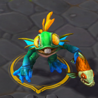
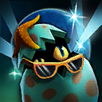
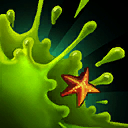
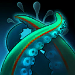
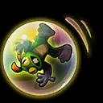
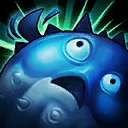
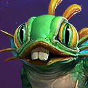

Murky
Welcome to our Murky guide for Heroes of the Storm. Here you will learn everything you need to know in order to play Murky in a competitive environment, whether you play on your own or with a team.
Balanced Build
| Level 1 | Level 4 | Level 7 | Level 10 | Level 13 | Level 16 | Level 20 |
|---|---|---|---|---|---|---|
 |
 |  |  |  |  |  |
The Balanced build seeks to find a healthy middle point between offensive reliability and survival. Key Talents include Black Lagoon Icon Black Lagoon and Fish Oil Icon Fish Oil, which allows Murky to easily hit multiple Heroes with Slime Icon Slime. Note that March of the Murlocs Icon March of the Murlocs can also be picked instead of Octo-Grab Icon Octo-Grab for area of effect combo-oriented team compositions.
Go Back